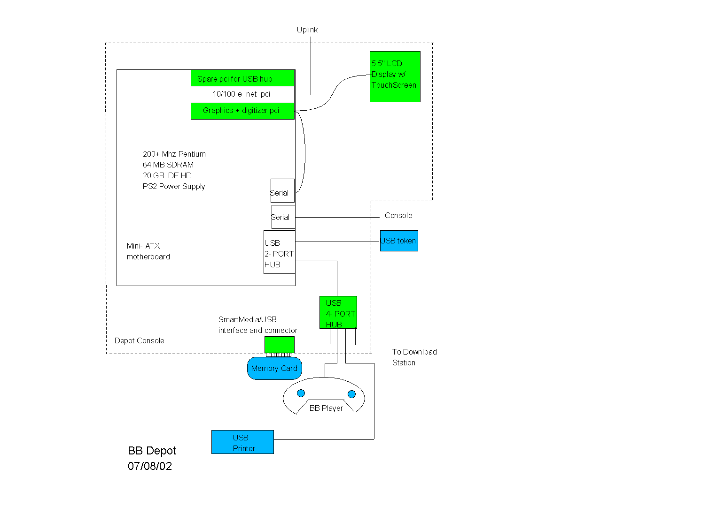

enable download of e-ticket to the memory module
provide content download to the bb player memory module from a network server d50 1 a50 2
The d57 2 a58 1 keys to navigate the menus on the screen. d78 1 a78 1
 d138 4 a141 3 NOTE: the player will be powered on when the memory module is inserted, so the modules need to handle live insertion. Similarly, the software will need to notify the depot console when the memory card is inserted. a406 2